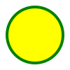

<!--
  SVG <svg>

  É uma marcação, estilo html, mas não é para textos e sim para fazer imagens.
  Possuimos elementos para gerar formas

  Para entender melhor
  - Imagem rasterizada x Imagem vetorizada

  Benefícios:
  - Mais leve
  - Mais detalhada
  - Maior acessibilidade e SEO
  - Pode ser editada via CSS ou atributos

  Desvantagens:
  - Pode ser mais complicado de trabalhar
  - Quanto mais complexa a imagem, mais trabalho para o navegador
  - Navegadores mais antigos não possuem suporte a essa tag

  Para fotografias, ainda prefira usar imagens rasterizadas
-->



<!--
<svg width="300" height="200">
  <rect stroke="blue" stroke-width="4" width="100%" height="100%" fill="green">
</svg>
-->

<!-- 
  Referência:
  https://developer.mozilla.org/en-US/docs/Web/SVG/Element
-->